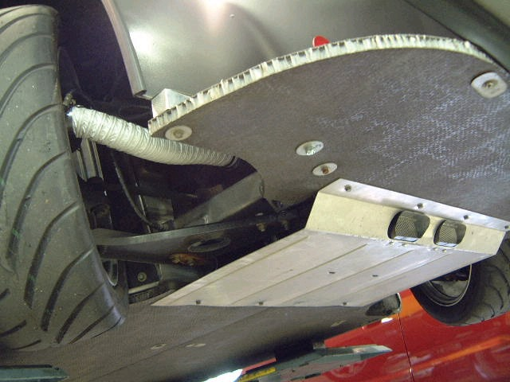
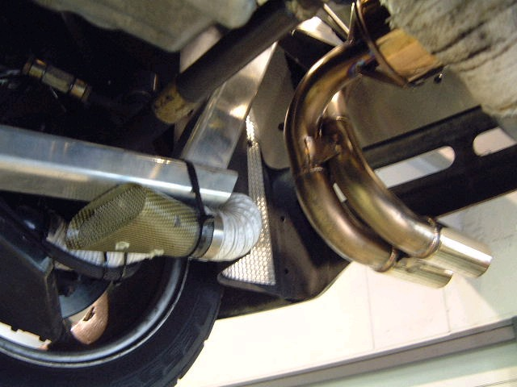
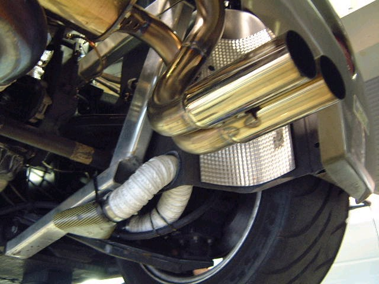

ブレーキエアダクト



久しぶりの改造ネタです。サ−キット走行すると、どうもブレ−キを酷使するみたいで、よくベ−パ−ロック気味になりブレ−キがフカフカになってしまいます。
ミンテックスのパッドを使ってますが、次の手を考えました。Ｆの吸い込み口はカ−ボンファイバ−製、Ｒは石が当たりやすいのでカ−ボン．ケブラ−製です。
ステン金網で石の進入を防いでます。自家製です。ホ−スは５０パイで、ビリオンのダクトホ−スを使用しました。効果の程は５月２３日の走行会で解るでしょう。(040514 よしの記)